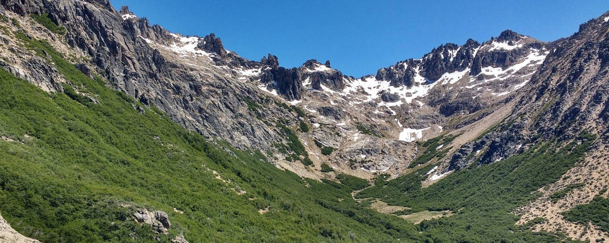
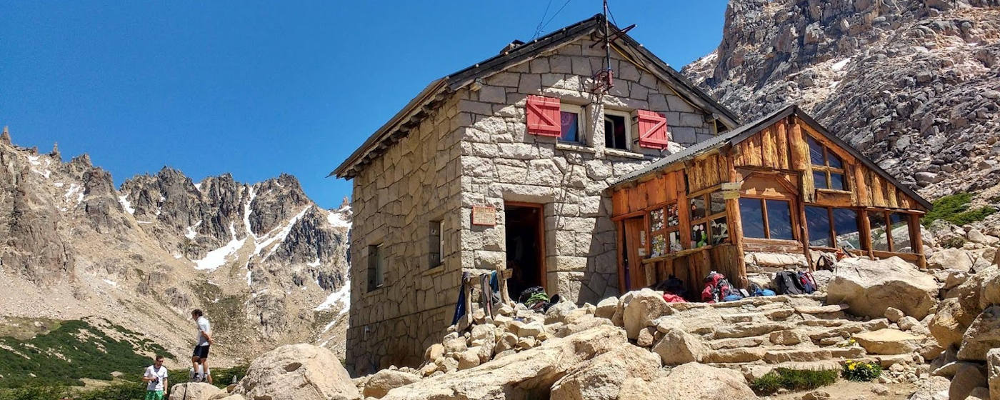
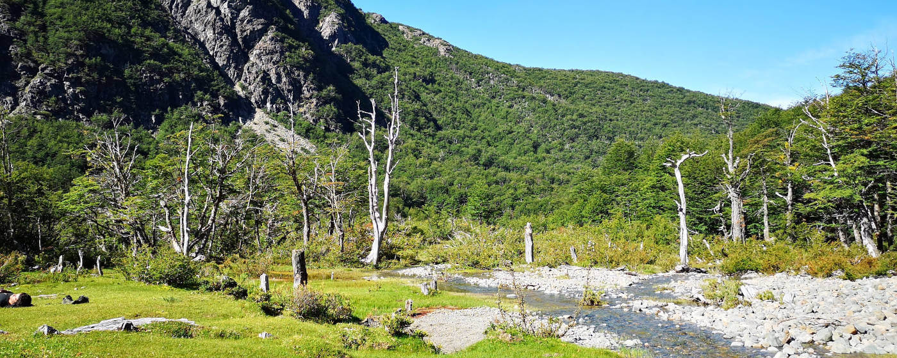
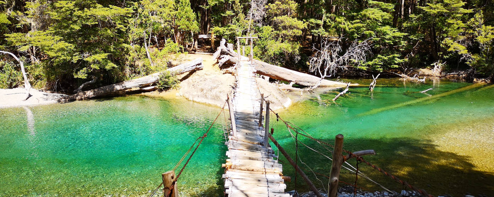
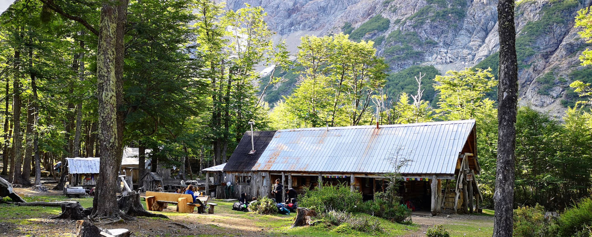
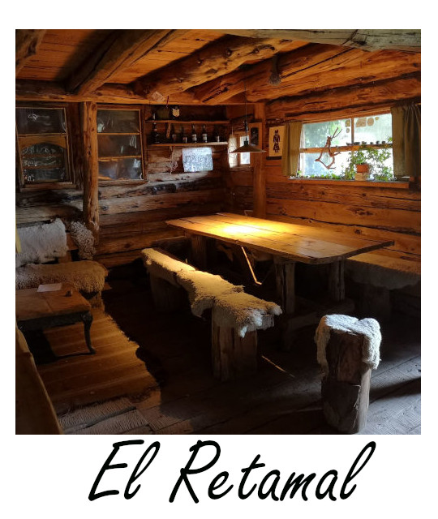
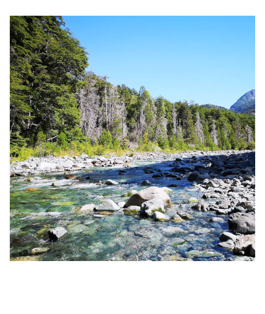
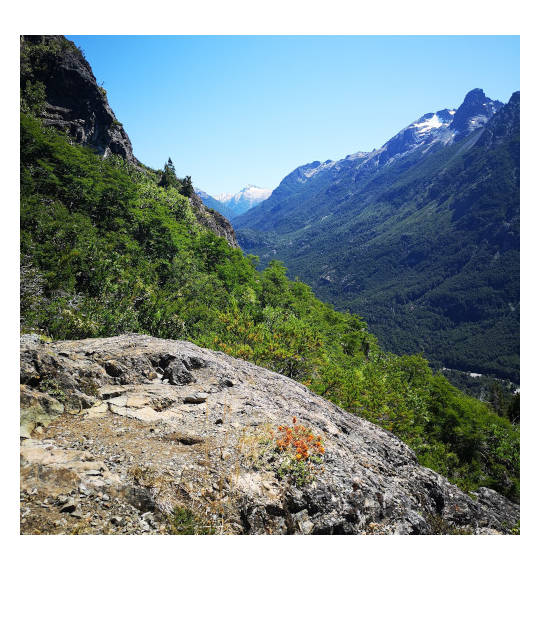

Nordpatagoniens Wanderparadiese
In wem das Wanderherz schlägt, der sollte in den Norden von Patagonien reisen. Weit ab von großen Touristenströmen gibt es Wanderungen in allen Schwierigkeitsgraden. Dich erwartet eine Gegend von Nadelbäumen bewaldeter Berge, türkisblauen Flüssen und urigen Berghütten.
Hier findest du eine Übersicht über die schönsten Wandergebiete mit exemplarischen Wanderungen in diesen.

Wandergebiete
1. Bariloche
Die Berge bei Bariloche verzaubern einen mit einem grünen Bergpanoroma, das von Seen durchtrennt wird. Eine Vielzahl von Lagunen mitten in den Bergen vervollständigen das Bergglück. In dieser Gegend gibt eine Vielzahl an anspruchsvollen Wanderungen und schönen Hütten zum Übernachten. Du hast die Möglichkeit eine Tageswanderungen zum Refugio Frey und Refugio Lopez zu machen oder du machst direkt eine anspruchsvollere Viertageswanderung von einer Hütte zur nächsten. In den Hütten kann übernachtet oder außerhalb dieser gezeltet werden.
Eine Übersicht aller Wanderrouten und Hütten findest du hier. Eine Beschreibung exemplarischer Wanderungen gibt es im Folgenden.
Option C: Hüttenwanderung
Es gibt die Möglichkeit vom Refugio Frey, über das Refugio Jakob zum Refugio Laguna Negra zu wandern, um dann wieder zurück nach Bariloche zu kehren. Die Wanderungen sind teilweise sehr anspruchsvoll und sollten auf Grund steiler Anstiege nur in der genannten Richtung gemacht werden. Auf der schweren Etappe, zwischen dem Refugio Jakob und dem Refugio Laguna Negra, wird man für die Anstrengungen mit wunderschönerster, unberührter Natur belohnt.
Für diese Wanderung sollte man sich auf der Seite des Nahuel Huapi Nationalparks registrieren.
Die Wanderung ist nur im Hochsommer möglich (Februar), da am Sommeranfang oft noch zu viel Schnee liegt und die Wanderwege zwischen den Refugios gesperrt sind. Ich wollte diese Wanderung im Dezember machen und es war unmöglich.

Tag 1: Wanderung zum Refugio Frey
Distanz: 10 km - Höhenmeter: 700 m - Schwierigkeitsgrad: Leicht bis Mittel*
Die Wanderung beginnt am Parkplatz des Cerro Catedral Skigebietes (stündlich fahrender Bus Nummer 55 vom Busbahnhof in Bariloche). Ein Holzschild mit der Aufschrift “Frey“ kennzeichnet den Start der Wanderung. Die Überachtung im Refugio Frey muss über ihre Homepage zuvor angemeldet werden.
Tag 2: Wanderung vom Refugio Frey zum Refugio JakobDistanz: 9 km - Höhenmeter: 530 m - Schwierigkeitsgrad: Mittel bis Schwer*
Die Wanderung startet hinter der Lagune Toncek, von wo der Wanderweg zuerst durch das flache Tal führt, bis man zum Anstieg zur Lagune Schmoll gelangt. Folge dem Anstieg. Danach umquere die Lagune Schmoll im Uhrzeigersinn bis zum Anstieg zum „Cancha de Futbol“, hinter welchem ein steiler Abstieg zum Ruco Tal beginnt. Von dort führt die Wanderung durch den Wald und über einen Hügel zum Rufugio Jakob.
Die Übernachtung im Refugio Jakob kann über folgende Homepage reserviert werden.
Tag 3: Wanderung vom Refugio Jakob zum Refugio Laguna Negra
Distanz: 10 km - Höhenmeter: 850 m - Schwierigkeitsgrad: Schwer (Schnee und Eis von Oktober bis Januar)*
Auf dieser Wanderung gibt es kurze Bereiche, in denen man klettern muss. Zusätzlich gibt es normalerweise Eis und Schnee bis Ende Januar, sodass eine spezielle Ausrüstung mitgenommen werden muss. Nicht in allen Bereichen des Wanderweges gibt es eine ausreichend gute Markierung des Weges, sodass man eine Karte der Gegend dabei haben sollte. Eine genaue Beschreibung mit weiteren wichtigen Hinweisen dieser Strecke findet sich hier.
Eine Reservierung im Refugio Laguna Negra ist nicht notwendig. Weitere Informationen über das Refugio, sowie eine aktuelle Preisliste, gibt es hier.
Tag 4: Wanderung vom Refugio Laguna Negra zurück nach Bariloche
Distanz: 11 km - Höhemeter: 800 m (bergab) - Schwierigkeitsgrad: Mittel*
Die Wanderung über den gut gekennzeichneten Wanderweg geht an diesem Tag primär bergab und am Ende kommt man in der Nähe des Dorfes Colonia Suiza aus, von wo man den Bus Nummer 10 zurück nach Bariloche nehmen kann.
♦ ♦ ♦
2. El Bolsón
Ein Fluss, der so türkis ist wie das Wasser in der Karibik, der sich durch die Berge geschlungen hat, und so eine einzigartige Landschaft entstehen ließ: Das ist der Rio Azul in El Bolsón. Und genau entlang dieses Flusses, sowie der angrenzenden Berge, befindet sich das größte zusammenhängende Wandergebiet Argentiniens, mit sechszehn Refugios zum Übernachten.
Die Vielfalt der Gegend von Gletschern, über Seen, bis hin zum türkisblauen Rio Azul und zu grauen Felswänden ist unbegrenzt. Die Wanderwege, die nicht direkt zum Cajón del Azul führen, sind wenig frequentiert und man kann die Einsamkeit beim Wandern finden. Die Wanderung zum Cajón del Azul ist beliebt und somit frequentierter.
Eine Übersicht aller Wanderungen findet man hier. Zusätzlich gibt es in dem Touristenbüro in El Bolsón eine extra Wanderabteilung, wo man Empfehlungen und aktuelle Informationen zu dem Wandergebiet bekommt. Für alle Wanderungen in diesem Bereich muss man sich zuvor bei der Behörde ANPRALE registrieren. Eine Registrierung ist an den Eingängen des Parkes oder im Internet möglich. Um Wartezeiten zu vermeiden empfiehlt sich die Registrierung im Internet: hier.
Es gibt zwei mögliche Startpunkte für die Wanderungen: Die Tagestour zum Cajon Azul startet in Wharton, sollte man eine Mehrtagestour machen kann man auch am Campingplatz „Doña Rosa“ starten. Es gibt einen Bus zu beiden Ausgangsorten. Über den genauen Abfahrtsort und die Abfahrtszeit kann man sich im Touristenoffice informieren. Alternativ kann man ein Taxi zu den Startpunkten nehmen (400 ARS für die Strecke El Bolsón zum Campingplatz „Doña Rosa“ im März 2020).
Hinweis: Im kompletten Naturschutzgebiet gibt es kein Mobilfunkempfang.
♦ ♦ ♦
Option A: Tageswanderung zum Cajón del Azul
Distanz: 16 km - Höhenmeter: 240 m - Dauer: 7 Stunden - Schwierigkeitsgrad: Mittel*
Sollte man nur wenig Zeit in El Bolsón zur Verfügung haben, empfiehlt es sich, zumindest die Wanderung zum Cajón del Azul zu machen, einer Stelle des Rio Azul, wo sich der Fluss zwischen 30 Meter hohen Felsen hindurchzwängt und dabei in seinen schönsten Blautönen schimmert.
Die Wanderung führt über breite Wanderwege und man kreuzt regelmäßig den Rio Azul. Sollte das Wetter gut genug sein, lädt der Rio Azul an vielen Stellen zu einem kleinen Bad ein. Auf dem Weg und auch am Cajón del Azul gibt es Refugios, welche Speisen und Getränke anbieten. Das Ufer des Rio Azul lädt jedoch auch zu einem herrlichen Picknick ein.
Eine Alternative zum Wandern bietet ein Ausritt zum Cajón del Azul. Eine Tour kann per Whats App unter folgendem Kontakt gebucht werden (Stand März 2020).
♦ ♦ ♦
Option B: Circuito Hielo Azul
Aufgrund der Refugios bietet sich die Gegend für eine Mehrtageswanderung an, ohne dass eine komplette Outdoorausrüstung mitgenommen werden muss. Ein Schlafsack und ein wenig Tagesproviant sind ausreichend, um mehrere Tage in der Abgelegenheit und Natur zu verschwinden. Eine Reservierung zur Übernachtung in den Refugios ist nicht notwendig.
Eine anspruchsvolle Viertageswanderung, auf Grund mit vielen steilen Abstiegen, könnte sein:
Tag 1: Campingplatz „Doña Rosa“ zum Refugio „Hielo Azul“
Distanz: 12 km - Höhenmeter: 1033 m - Schwierigkeitsgrad: Mittel*
Am Morgen lässt man sich von einem Taxi zum Campingplatz „Doña Rosa“ bringen und startet dort seine Wanderung. Nachdem man ungefähr zwei Kilometern dem Fluss gefolgt ist, kommt man an eine Hängebrücke, vor welcher nochmal ein ANPRALE-Mitarbeiter kontrolliert, ob man sich richtig registriert hat. Nach der Überquerung der Hängebrücke startet die richtige Wanderung durch Wälder und entlang von Flüssen. Man passiert die Aussichtpunkte „Mirador del Mallin“ und „Mirador Raquel“. Nach elf Kilometern gibt es eine Abzweigung, bei der man sich links halten muss, um zum Refugio „Hielo Azul“ zu gelangen. Das Refugio liegt in einem von einem Bach durchzogenen Tal, umringt von einer 270° Felswand.
Eine ausführliche Beschreibung auf Spanisch mit einer Karte findet man hier.
Tag 2: Refugio „Hielo Azul“ zum Refugio „El Retamal“
Distanz: 9,5 km - Höhenmeter: 916 m (steil bergab) - Schwierigkeitsgrad: Schwer*
Die Höhenmeter die man am Tag zuvor gut gemacht hat, wird man an diesem wieder heruntersteigen. Zu Beginn der Wanderung muss man ungefähr einen Kilometer zurück, bis zu der Abzweigung vom Vortag, laufen und sich dann in Richtung Refugio Natación aufmachen. Zu Beginn dieses Tages gibt es noch einige kleine Aufstiege, bis man am Refugio Natación mit seinem großen See ankommt. Den See muss man umqueren und im Anschluss geht es für die nächsten Kilometer gemächlich bergab. Nach dem Kilometer fünf kommt ein steiler Abstieg. Der Abstieg endet am Rio Azul und die letzten Kilometer von dort bis zum Refugio „El Retamal“ sind gemächlicher.
Das Refugio „El Retamal“ ist wunderschön auf einer Lichtung im Wald gelegen, mit einem Blick auf die Berge und von einem großen Garten umgeben.
Tag 3: Refugio „El Retamal“ zum Casa Campo
Distanz: 5 km - Höhenmeter: 124 m - Schwierigkeitsgrad: Leicht*
Besuche das Casa Campo, ein traditioneller, patagonischer Bauernhof mitten in den Bergen, weit weg von jeder Zivilisation. Man könnte an diesem Tag schon zurück nach El Bolsón wandern, allerdings lohnt sich der Besuch des Casa del Campo für die Unterkunft an sich. Kühe, Schafe und Pferde laufen auf den Wiesen um das Haus, Hunde rennen durch den Garten und es gibt eine familiäre Atmosphäre.
Nach einem gemütlichen Frühstück in Refugio „El Retamal“ ist die nur fünf Kilometer lange Wanderung, mit wenigen Höhenmetern, an diesem Tag zur Erholung gedacht. Man kann ein paar Stündchen am Rio Azul verbringen oder seinen Füßen etwas Entspannung im Garten des Casa Campo gönnen.
Auf der Wanderung an diesem Tag kreuzt man eine besonders malerische Schlucht des Rio Azul. Der Fluss zwängt sich kurz vor dem Refugio Casa Campo durch Felsen und das Wasser schimmert dort in den schönsten Türkistönen. An dieser Stelle gibt es eine Brücke über den Rio Azul, sodass man beeindruckende Fotos von dieser Stelle schießen kann.
Tag 4: Casa Campo zurück nach Wharton
Distanz: 13 km - Höhenmeter: 315 m (primär bergab) - Schwierigkeitsgrad: Leicht bis Mittel*
Am letzten Tag geht es zurück in die Zivilisation. Die Wanderung ist entspannt und entlang des gut ausgeschilderten Weges gibt es zahlreiche Refugios, um zwischendurch ein paar Pausen einzulegen.
In Wharton angekommen, gibt es die Möglichkeit den Bus oder ein Taxi zurück in die Stadt zu nehmen.
Hinweis zu den Refugios: Melde dich bei deiner Ankunft am Refugio jeweils bei den Betreibern an und am nächsten Tag vor dem Verlassen wieder ab. Es wird auf diese Weise überprüft, dass kein Wanderer verloren geht. In vielen Refugios wird kein Englisch, sondern nur Spanisch gesprochen.
♦ ♦ ♦

Good to know
Refugios
Bei den Refugios handelt es sich um einfache Berghütten mit Bettenlagern zum Übernachten. Zur Übernachtung muss nur ein Schlafsack mitgebracht werden. Durchschnittlich kostet eine Übernachtung 1000 ARS (Stand März 2020). Zusätzlich bieten die Hütten Verpflegung in Form von Frühstück und Abendessen an. Das Frühstück kann normalerweise zu einer beliebigen Zeit eingenommen werden, wobei es sich beim Abendessen um ein gemeinschaftliches Essen zu einer festgelegten Zeit handelt. Da allgemein in Argentinien sehr spät gegessen wird, gibt es dieses zumeist zwischen 21 und 23 Uhr. Tagsüber können kleinere Snacks in den Berghütten gekauft werden.
Zumeist muss man sich in den Refugios nicht zuvor anmelden. Allgemein gilt in den Bergen, dass jedem Wanderer ein Obdach gestattet werden muss. Es gibt allerdings wenige Ausnahmen, in welchem um eine Anmeldung gebeten wird (z.B. Refugio Frey).
In den Refugios muss man sich bei seiner Ankunft jeweils bei den Betreibern anmelden und am nächsten Tag vor dem Verlassen wieder abmelden. Auf diese Weise wird überprüft, dass kein Wanderer verloren geht. In vielen Refugios wird kein Englisch, sondern nur Spanisch gesprochen.
Registrierung
Für beide Wandergebiete muss man sich bei der Behörde des Nationalparks registrieren. Die Registrierung ist kostenlos und kann über das Internet erfolgen. Die Homepage für Bariloche ist die des Nationalparks und für El Bolsón ist Anprale verantwortlich.

Marys Meinung
Der Norden von Patagonien ist für mich ein wahres Wanderparadies. Ich habe bisher nicht alle erwähnten Wanderungen gemacht, jedoch freue ich mich schon jetzt, diese in Zukunft zu machen. Die Wanderung in El Bolsón habe ich im Februar 2020 gemacht und für mich waren es wundervolle Tage in den Bergen, in der Abgeschiedenheit und im Grünen.
Aufgrund des guten Hüttensystems ist das Wandern auch über mehrere Tage sehr einfach in dieser Gegend. Bis auf einen Schlafsack muss keine Outdoorausrüstung mitgenommen werden. Verpflegung und Matratze werden in den Refugios angeboten, sodass der Wanderrucksack mit ein paar Snacks und Kleidung leicht bleibt.
Die Wandergebiete im Norden Patagoniens sind nicht überlaufen wie im Süden in El Chaltén oder im Torres del Paine. Man kann mehrere Stunden laufen ohne andere Wanderer zu treffen und ich hatte immer das Gefühl, dass mehr Argentinier selbst in diese Gegend zum Wandern fahren als internationale Touristen.

Disclaimer
*Die Schwierigkeitsgrade der einzelnen Wanderungen sind Einschätzungen. Ich habe die meisten Wanderungen auf dieser Seite gemacht und denke, dass diese Einteilungen passend sind, jedoch bin ich ein Hobbywanderer, sodass ich KEINE fachmännische Meinung abgeben kann. Die gegebenen Wetterbedingungen sollten bei der Entscheidung zu einer Wanderung immer berücksichtigt werden. Allgemein sind alle Aktivitäten dieser Seite Erfahrungen, Anregungen und Tipps. Die Verantwortung bei der Ausführung und Haftung obliegt bei dir. Alles auf dieser Seite ist nach meinem besten Wissen und Gewissen zusammengetragen, jedoch keine Garantie für Richtigkeit.